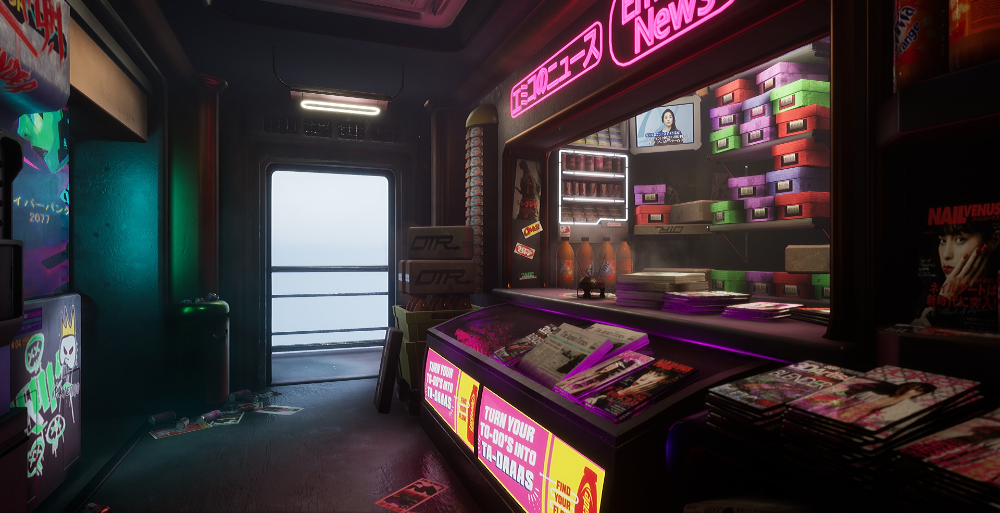

Tech
- Demystifying Startup Equity with Data Science.
- Announcing TensorFlow 2.0 Beta.
- Old but good: How Uber moved to Microservices.
- Martin Fowlers on Microservices.
- A year of large scale GraphQL - the biggest takeaways.
- Retail AI: It's Not Just for the Fortune 500 Anymore.
- GraphQL with Golang: A Deep Dive From Basics To Advanced.
- Landlord 2.0: Tech’s New Rentier Capitalism.
- Privacy Is Just the Beginning of the Debate Over Tech.
Github
- CLI tool to generate terraform files from existing infrastructure (reverse Terraform).
- A collection of malware samples and relevant dissection information.
Life
- 7 Psychological Superpowers Few People Have.
- "Hide your intelligence", "Stop Taking Everything So Seriously", and "Resist Group Think" ;)
- It’s Time to End Perfection Anxiety Once and For All.
- "Share an imperfect photo of yourself on social media."
- Patagonia’s CEO is donating company’s entire $10M Trump tax cut to fight climate change.
- Yes, Burnout Is Real — And We Can Address It Much Better When We Call It What It Is
Fun
- Majestic Surfing - Full movie SLATER CURREN MARTINEZ REYNOLDS FANNING.
- Tarantino's New Movie, "Once Upon a Time In Hollywood".
- Getsomerest by Quickly, Quickly.
- Pizza Pizza by Bugseed.
- Cotton Candy by Cospe.
- Godspeed You Black Emperor is in tour and playing in LA on 08/17!
- Good Omens: Best show on TV atm.
- Google's CTF is coming up late this month.
Aloha, bt3